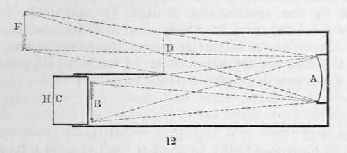

Chapter VIII. Portraiture By The Daguerreotype
Description
This section is from the book "A Manual Of Photography", by Robert Hunt. Also available from Amazon: A Manual of Photography.
Chapter VIII. Portraiture By The Daguerreotype
When Daguerre published his process, a period of twenty minutes was required to obtain a good copy of any external object: hence this period was far too long to admit of its being employed for portraiture.
Mr. Towson, of Devonport, in a very valuable paper which appeared in the Philosophical Magazine in 1839, offered several suggestions on the use of large lenses, etc., which he supposed might lead to the use of the daguerreotype for the purposes of portraiture.
Dr. Draper, of New York, acting on the suggestions of Mr. Towson relative to the adjustment of the focus, succeeded in accelerating his process so far as to obtain portraits from the life. He published his process in the London and Edinburgh Philosophical Magazine for September 1840. From this paper I shall take the liberty of making copious extracts. It was first stated that it was necessary, to procure any impression of human features on the daguerreotype plate, to paint the face white, or dust it over with a white powder, it being thought that the light reflected from the flesh would not have sufficient power to change the iodized surface. This has been shown to be an error, for, even when the sun shines but dimly, there is no difficulty in obtaining a correct delineation of the features.
"When the sun, the sitter, and the camera, are situated in the same vertical plane, if a double convex non-achromatic lens of four inches diameter and fourteen inches focus be employed, perfect mi matures can be procured in the open air in a period varying with the character of the light from 20 to 90 seconds. The dress also is admirably given, even if it should be black ; the slight differences of illumination are sufficient to characterize it, as well as to show each button and button-hole, and every fold. Partly owing to the intensity of such light, which cannot be endured without a distortion of the features, but chiefly owing to the circumstance that the rays descend at too great an angle, such pictures have the disadvantage of not exhibiting the eyes with distinctness, the shadow from the eyebrows and forehead encroaching on them. To procure fine proofs, the best position is to have the line joining the head of the sitter and the camera so arranged as to make an angle with the incident rays of less than ten degrees, so that all the space beneath the eyebrows shall be illuminated, and a slight shadow cast from the nose. This involves, obviously, the use of reflecting mirrors to direct the ray. A single mirror would answer, and would economise time, but in practice it is often convenient to employ two ; one placed, with a suitable mechanism, to direct the rays in vertical Hues, and the second above it, to direct them in an invariable course towards the sitter.
" On a bright day, and with a sensitive plate, portraits can be obtained in the course of five or seven minutes, in the diffused day-light. The advantages, however, which might be supposed to accrue from the features being more composed, and of a natural aspect, are more than counterbalanced by the difficulty of retaining them so long in one constant mode of expression. But in the reflected sunshine, the eye cannot bear the effulgence of the rays. It is therefore absolutely necessary to pass them through some blue medium, which shall abstract from them their heat and take away their offensive brilliancy. I have used for this purpose blue glass, and also ammoniaco-sulphate of copper, contained in a large trough of plate glass, the interstice being about an inch thick, and the fluid diluted to such a point, as to permit the eye to bear the light, and yet to intercept no more than was necessary. It is not requisite, when coloured glass is employed, to make use of a large surface ; for if the camera operation be carried on until the proof almost solarizes, no traces can be seen in the portrait of its edges and boundaries ; but if the process is stopped at an earlier interval, there will be commonly found a stain corresponding to the figure of the glass".
The chair in which the sitter is placed has a staff at its back, terminating in an iron ring, that supports the head, so arranged as to have motion in directions to suit any stature and any attitude. By simply resting the back or side of the head against this ring, it may he kept sufficiently still to allow the minutest marks on the face to be copied. The hands should never rest upon the chest, for the motion of respiration disturbs them so much as to bring them out of a thick and clumsy appearance, destroying also the representation of the veins on the back, which, if they are held motionless, are copied with surprising beauty.
" It has already been stated, that certain pictorial advantages attend an arrangement in which the light is thrown upon the face at a small angle. This also allows us to get rid entirely of the shadow from the background, or to compose it more gracefully in the picture ; for this, it is well that the chair should be brought from the back-ground, from three to six feet.
"Those who undertake daguerreotype portraitures will of course arrange the back-grounds of their pictures according to their own tastes. When one that is quite uniform is required, a blanket, or a cloth of a drab colour, properly suspended, will be found to answer very well. Attention must be paid to the tint : white, reflecting too much light, would solarize upon the proof before the face had time to come out, and, owing to its reflecting all the rays, a blur or irradiation would appear on all edges, due to chromatic aberration.
" It will readily be understood, that if it be desired to introduce a vase, an urn, or other ornament, it must not be arranged against the back-ground, but brought forward until it appears perfectly distinct upon the obscured glass of the camera.
" Different parts of the dress, for the same reason, require intervals, differing considerably, to be fairly copied; the white parts of a costume passing on to solarization before the yellow or black tints have made any decisive representation. We have, therefore, to make use of temporary expedients. A person dressed in a black coat and open waistcoat of the same colour, must put on a temporary front of a drab or flesh colour, or, by the time that his face and the fine shadows of his woollen clothing are evolved, his shirt will be solarized, and be blue, or even black, with a white halo around it. Where, however, the white parts of the dress do not expose much surface, or expose it obliquely, these precautions are not essential; the white collar will scarcely solarize until the face is passing into the same condition.
" Precautions of the same kind are necessary in ladies' dresses, which should not be of tints contrasting strongly.
" It will now be readily understood, that the whole art of taking daguerreotype miniatures consists in directing an almost horizontal beam of light, through a blue-coloured medium, upon the face of the sitter, who is retained in an unconstrained posture by an appropriate but simple mechanism, at such a distance from the back-ground, or so arranged with respect to the camera, that his shadow shall not be copied as a part of his body".
Professor Draper used a camera having for its objective two double convex lenses, the united focus of which for parallel rays was only eight inches; they were four inches in diameter in the clear, and were mounted in a barrel, in front of which the aperture was narrowed down to three and a half inches, after the manner of Daguerre's. He also adopted the principle of bringing the plate forward out of the best visible focus, into the focus of the violet rays, as was first suggested by Mr. Towson, of Devonport, who also made many experiments, about the same period, with cameras having mirrors instead of lenses. A patent was taken out by Mr. Woolcott, a philosophical instrument-maker of New York, for a camera for portraiture, with an elliptical mirror; which form of apparatus was also patented by Mr. Beard, in England, who having somewhat modified Dr. Draper's arrangements, succeeded still better in obtaining copies of " the human face divine".
A camera obscura of this description is constructed as follows. Fig. 12 is a sectional view of the apparatus. At one end of a box shaped as in the figure, and having an opening at d, is placed an elliptical mirror, a. The prepared plate b is fixed to the sliding frame c, by which it is adjusted to the best focus. The rays of light, radiating from a figure placed at F, will, it must be evident, pass through the opening at d, and fall on the mirror, as represented by the dotted lines, and will be thence reflected to the plate b.
The mirror has certainly the advantage of throwing a greater quantity of light upon the plate, but it has the great disadvantage of limiting the size of the picture. With a mirror of seven inches diameter, we only procure pictures which will be perfect over two square inches; whereas, with a lens of three inches diameter and fourteen inches focal length, pictures of a foot square may be worked. From this it will be seen that the mirror is only applicable where single objects are to be copied.
Eventually the sensibility of the surface of the plates was greatly increased. Mr. Goddard appears to have been the first to employ bromine in combination with iodine; and it was subsequently found by M. Claudet and others, that chlorine had an accelerating power, but not to the same extent as the bromine.
These discoveries led to that amazing degree of sensitiveness which now enables us, in good light, to take a picture in less than a second of time.
Continue to:
- prev: Section III. Collodion
- Table of Contents
- next: Chapter IX. General Summary Of The History Of Photography